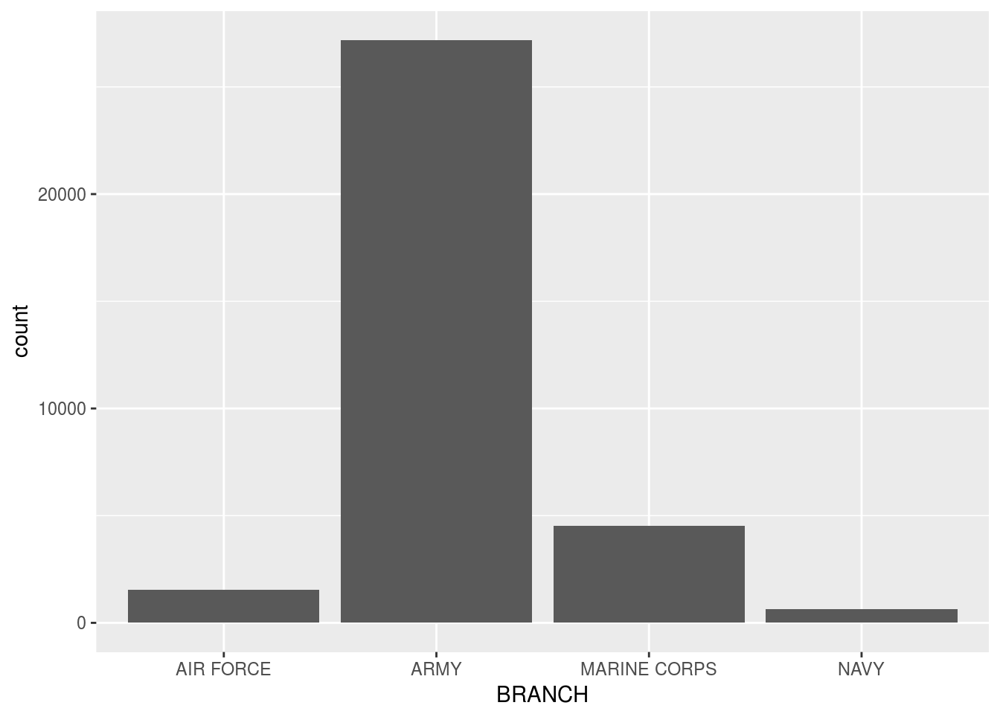
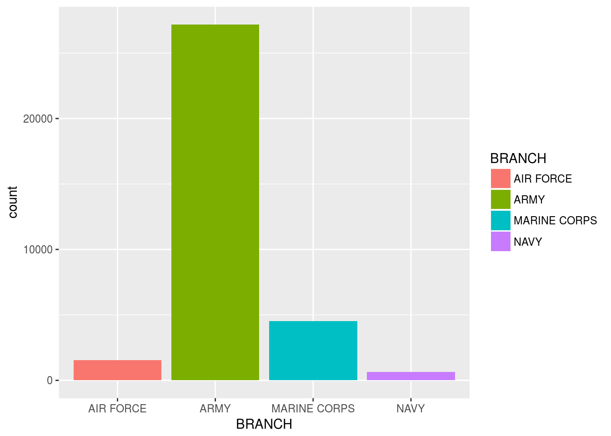
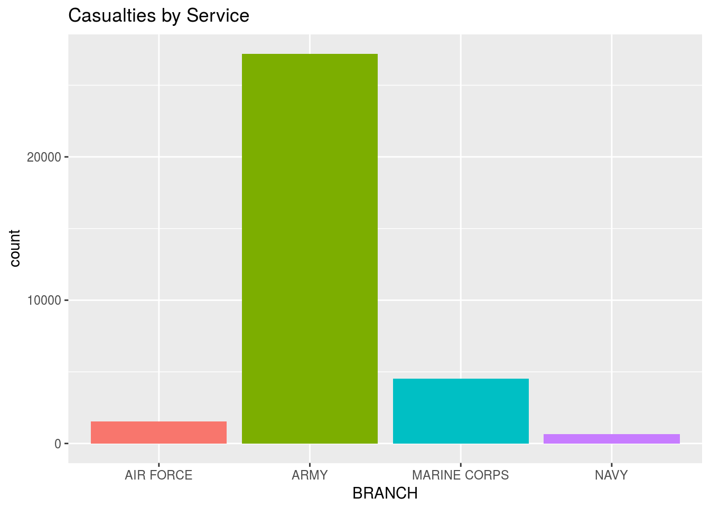
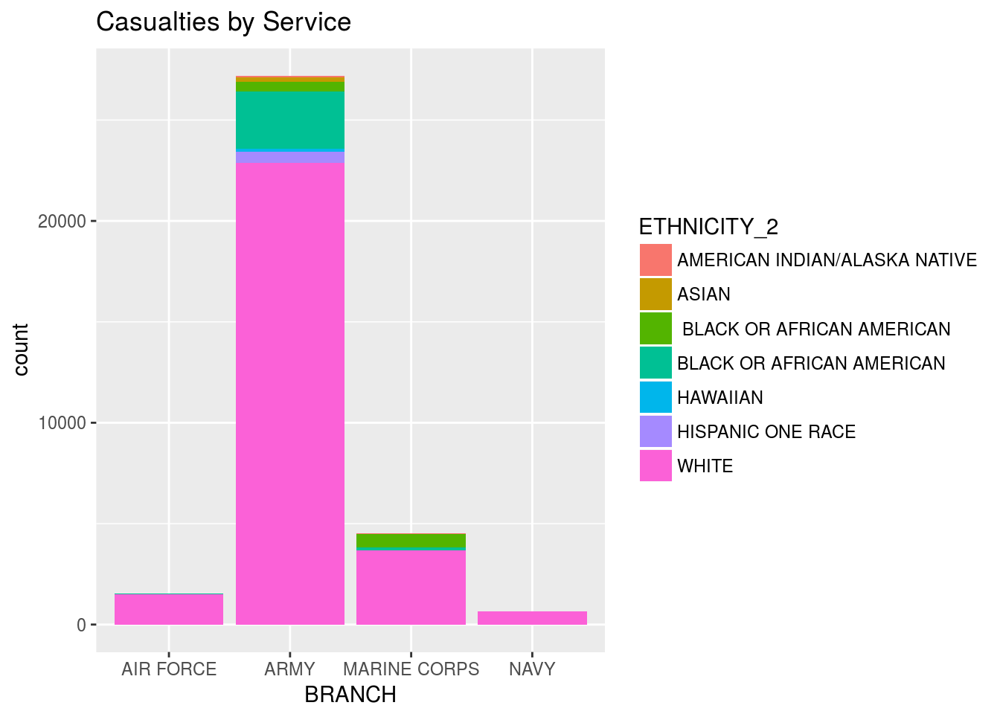
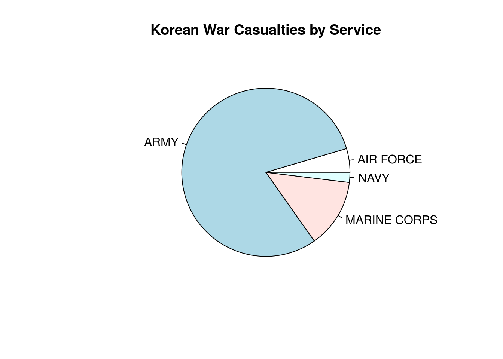
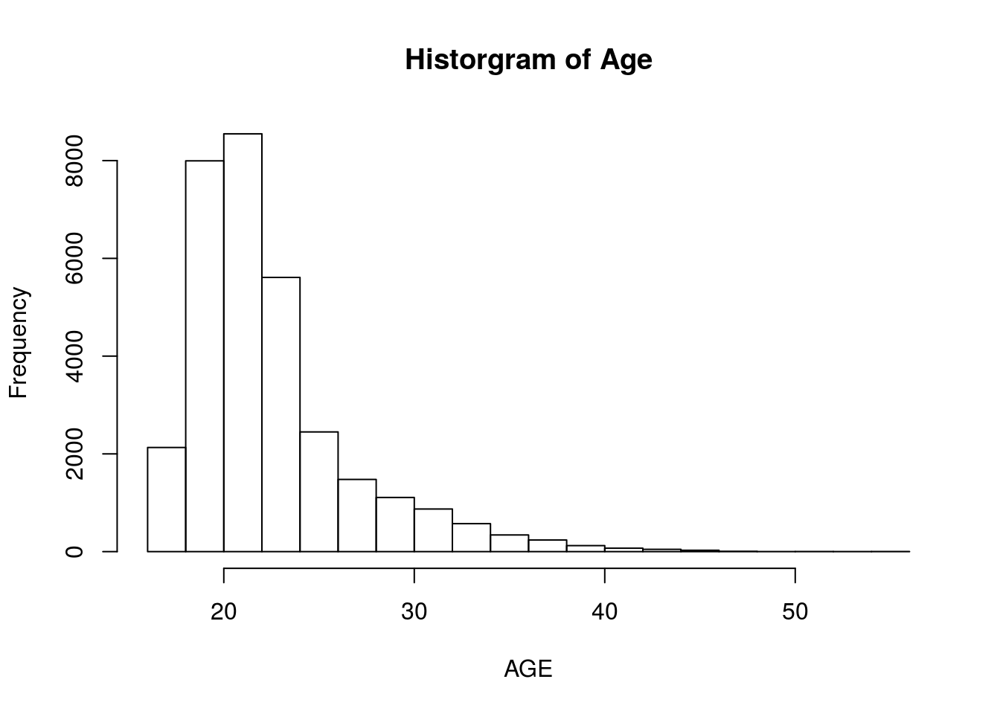
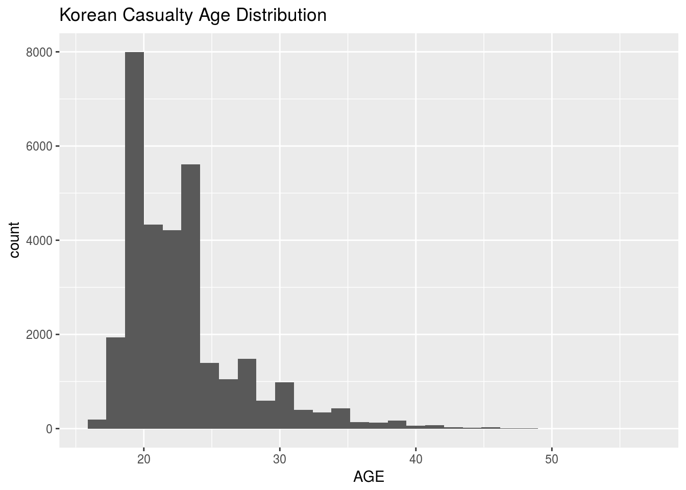
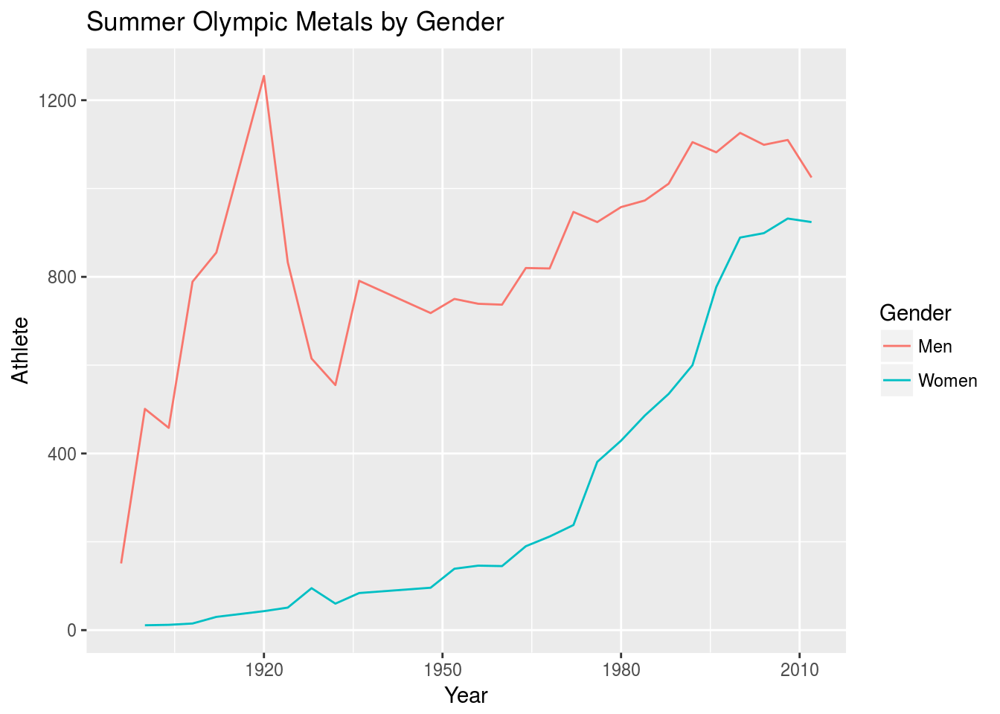
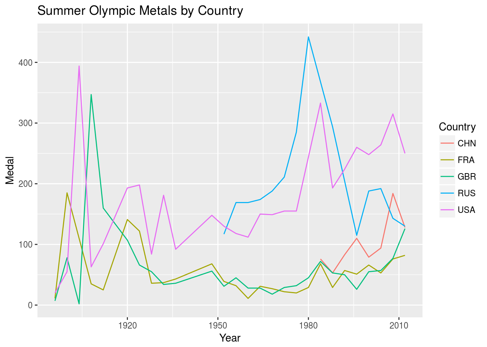
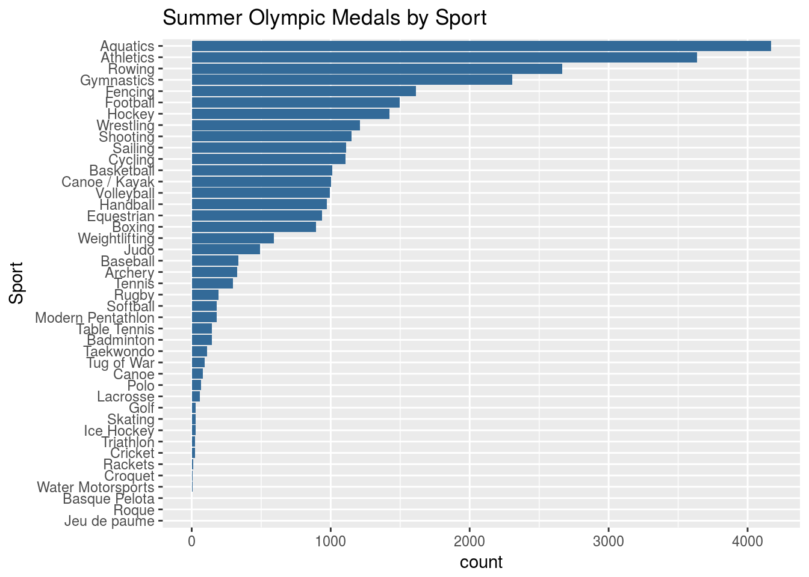

Lesson: 3 Basic Visualization
The R Programming language has some of the most powerful data visualization packages available. These packages are continually expanded upon, with new data visualizations packages being created on a regular basis. In addition to packages that create your basic statistical visualization (line plots, bar plots, pie plots, etc) there are packages that create geospatial visualizations, 3D visualizations, as well as interactive visualizations.
Lets start by reading in the Korean Conflict data and perform the primary cleaning functions that we performed last lesson.
kor <- read.csv('KoreanConflict.csv', as.is=TRUE)
kor$BIRTH_YEAR <- as.numeric(kor$BIRTH_YEAR)
kor <- kor[!is.na(kor$BIRTH_YEAR),]Now that we have the data in memory, we will use some basic visualizations to explore the data. In this lesson, we will primarily use visualizations from the ggplot2 package (Wickham and Chang 2016). If you haven’t installed this package yet, run the command install.packages('ggplot2').
3.1 Bar Plot
We will start by producing a basic barplot of categorical variables. First we’ll look at the BRANCH field for the Korean Casualties.
library(ggplot2)
ggplot(kor, aes(BRANCH)) + geom_bar()
At first this command isn’t very intuitive. The ggplot command is used with all visualizations. In this command it says that we will create a visualization of the kor data set, and particularly look at the BRANCH variable. The next command says to take this specific field and create a barplot (we could create other plots with this data as well.)
If we wanted to improve the color scheme, we could add fill = BRANCH.
ggplot(kor, aes(BRANCH, fill = BRANCH)) + geom_bar()
Now, let’s add a title. Additionally, we will get rid of the legend, since it the labels are already on the axis.
ggplot(kor, aes(BRANCH, fill = BRANCH)) + geom_bar() +
ggtitle("Casualties by Service")+ theme(legend.position="none")
What if we wanted to stacked barplot? Say we wanted to see how the distribution of ETHNICITY in the service BRANCHES. First, let’s take a look at our categories:
table(kor$ETHNICITY_2)##
## AMERICAN INDIAN/ALASKA NATIVE
## 103
## ASIAN
## 229
## BLACK OR AFRICAN AMERICAN
## 1146
## BLACK OR AFRICAN AMERICAN
## 3022
## HISPANIC ONE RACE
## 566
## NATIVE HAWAIIAN OR OTHER PACIFIC ISLANDER
## 142
## WHITE
## 28691These are rather long names to display on a chart. We will start by creating shorter names. We can do this in the code below using the ``grep command that we learned in Lesson 2:
kor$ETHNICITY_2[grep("HAWAIIAN",kor$ETHNICITY_2)] <- "HAWAIIAN"Now all we have to do to change in our previous code is to change the fill = BRANCH to fill = ETHNICITY_2:
ggplot(kor, aes(BRANCH, fill = ETHNICITY_2)) + geom_bar() +
ggtitle("Casualties by Service")
3.2 Pie Plot
Statisticians will generally tell you that you should never use a Pie Plot (usually a bar plot is recommended because it is easier for the human eye to distinguish differences in magnitude). That being said, there are still a few occasional times when a pie plot is necessary. For this plot, we are going to use a function from the BASE graphics package (this comes with R and you don’t have to load it). The pie plot is very easy to produce if we wrap the pie() command around the table command:
pie(table(kor$BRANCH), main = "Korean War Casualties by Service")
3.3 Histogram Plot
Now we’ll take a look at several ways to create histograms in R. This is where R will quickly outshine Microsoft Excel and other spreadsheet programs. While Excel can create a barplot just like R, it is extremely time consuming to create a histogram in Excel, whereas R can create one in one line code.
Let’s create a histogram of the age or each Korean Casualty. Notice that we don’t have a field that has age in it, but we do have the BIRTH_YEAR and FATALITY_YEAR. The calculation below will create a new field that is the AGE of the casualty at death (notice that we remove all records with a FATALITY_DATE after 1960 in order to remove those who were MIA and declared dead at a later time).
# Filter our MIA
kor2 <- dplyr::filter(kor, FATALITY_DATE < 1960)
# Coerce to numeric
kor2$FATALITY_YEAR <- as.numeric(kor2$FATALITY_YEAR)
kor2$BIRTH_YEAR <- as.numeric(kor2$BIRTH_YEAR)
# Create AGE field
kor2$AGE <- kor2$FATALITY_YEAR - kor2$BIRTH_YEAR Now that we’ve created the AGE field, we will use two different techniques to create a histogram. The Base R package has a histogram function that is easy to use and helpful for exploring data.
hist(kor2$AGE, freq=TRUE, main = "Historgram of Age", xlab = "AGE")
The ggplot2 package also has the ability to generate a histogram that is generally better for presentations.
ggplot(kor2, aes(AGE)) + geom_histogram() + ggtitle('Korean Casualty Age Distribution')
3.4 Time Series Plot
Time series plots (and line plots in general) are helpful in visually identifying trends and anomalies in data. We are going to change our data sets to look at the Olympic data. This data set is the data on all Olympic metals for the Summer Olympics from 1896 to 2012. This data set is available here:
https://s3.amazonaws.com/dscoe-data/summer.csv
You can download the file with the following command:
download.file("https://s3.amazonaws.com/dscoe-data/summer.csv", destfile = "summer.csv")Now that you’ve acquired the data, read it into R and take a look at its structure with the following two commands:
oly <- read.csv('summer.csv', as.is = TRUE)
str(oly)## 'data.frame': 31165 obs. of 9 variables:
## $ Year : int 1896 1896 1896 1896 1896 1896 1896 1896 1896 1896 ...
## $ City : chr "Athens" "Athens" "Athens" "Athens" ...
## $ Sport : chr "Aquatics" "Aquatics" "Aquatics" "Aquatics" ...
## $ Discipline: chr "Swimming" "Swimming" "Swimming" "Swimming" ...
## $ Athlete : chr "HAJOS, Alfred" "HERSCHMANN, Otto" "DRIVAS, Dimitrios" "MALOKINIS, Ioannis" ...
## $ Country : chr "HUN" "AUT" "GRE" "GRE" ...
## $ Gender : chr "Men" "Men" "Men" "Men" ...
## $ Event : chr "100M Freestyle" "100M Freestyle" "100M Freestyle For Sailors" "100M Freestyle For Sailors" ...
## $ Medal : chr "Gold" "Silver" "Bronze" "Gold" ...Let’s say that we want to explore the trend of increased numbers of women participating in the Summer Olympics over the past century. To do this we could start by aggregating the number of Olympic medals by Year and Gender:
oly_sum <- aggregate(Athlete ~ Year + Gender, data=oly, length)Let’s take a look at the first few lines of this new data set to make sure that it aggregated the data as we anticipated:
head(oly_sum)## Year Gender Athlete
## 1 1896 Men 151
## 2 1900 Men 501
## 3 1904 Men 458
## 4 1908 Men 789
## 5 1912 Men 855
## 6 1920 Men 1255Everything looks good. Now we have a data set that we can use to create a time series line plot. We create this plot below:
ggplot(oly_sum, aes(Year, Athlete, group = Gender, color = Gender)) + geom_line() + ggtitle('Summer Olympic Metals by Gender')
From this graph we see that there was significant growth in the participation of women in the Olympics starting in the 1970’s (we also see an interesting spike in the number of medals for men in the 1920’s that we could explore if desired).
Now let’s select a few of the prominent countries in the Summer Olympics (we’ll look at the permanent members of the UN Security Council: United States, Great Britain, France, China, and Russia). To start this let’s first look at the table of countries listed in the data set.
table(oly$Country)##
## AFG AHO ALG ANZ ARG ARM AUS AUT AZE BAH BAR BDI BEL BER
## 4 2 1 15 29 259 11 1189 146 26 27 1 1 411 1
## BLR BOH BOT BRA BRN BUL BWI CAN CHI CHN CIV CMR COL CRC CRO
## 113 7 1 431 1 333 5 649 33 807 1 23 19 4 114
## CUB CYP CZE DEN DJI DOM ECU EGY ERI ESP EST ETH EUA EUN FIN
## 410 1 56 507 1 6 2 28 1 442 39 45 260 223 456
## FRA FRG GAB GBR GDR GEO GER GHA GRE GRN GUA GUY HAI HKG HUN
## 1396 490 1 1720 825 25 1305 16 148 1 1 1 8 4 1079
## INA IND IOP IRI IRL IRQ ISL ISR ISV ITA JAM JPN KAZ KEN KGZ
## 38 184 3 61 30 1 17 7 1 1296 127 788 49 93 3
## KOR KSA KUW LAT LIB LTU LUX MAR MAS MDA MEX MGL MKD MNE MOZ
## 529 6 2 20 4 55 2 22 8 6 106 24 1 14 2
## MRI NAM NED NGR NIG NOR NZL PAK PAN PAR PER PHI POL POR PRK
## 1 4 851 84 1 554 190 121 3 17 15 9 511 33 58
## PUR QAT ROU RSA RU1 RUS SCG SEN SGP SIN SLO SRB SRI SUD SUI
## 8 4 640 106 17 768 14 1 4 4 26 31 2 1 380
## SUR SVK SWE SYR TAN TCH TGA THA TJK TOG TPE TRI TTO TUN TUR
## 2 34 1044 3 2 329 1 25 3 1 44 20 10 10 86
## UAE UGA UKR URS URU USA UZB VEN VIE YUG ZAM ZIM ZZX
## 1 7 173 2049 76 4585 20 12 2 435 2 23 48Studying this data a bit, we see that the ISO-3 code for Russia changed from URS to RUS after the fall of the Soviet Union. For our analysis, we will change all USR data to RUS.
oly$Country[oly$Country=="URS"] <- "RUS"Now will will aggregate the data by Year and Country as well as filter out the counties we are interested in (notice how we create a vector of our five countries and then use the %in% function to filter out multiple countries):
library(dplyr)
oly_country <- aggregate(Medal ~ Country + Year, data = oly, length)
countries <- c('USA','GBR','FRA','CHN','RUS')
oly_country2 <- filter(oly_country, Country %in% countries)Having completed this, we will now plot a time series plot by country for the last century.
ggplot(oly_country2, aes(Year,Medal,group = Country, color = Country)) + geom_line() + ggtitle('Summer Olympic Metals by Country')
This plot highlights a bit of the history of the summer Olympics. Note that Russia began competing in the 1950’s and China didn’t begin competing until the mid-1980’s. While the US has the longest sustained volume, Russia has the highest number in a single year (1980). While Great Britain had a surge at the turn of the century, it has decreased to ~50 medals in the 1920’s, and stayed near this mark for most the century (as has France).
3.5 Practice Problem
Using the Olympic Data and Google, try to recreate the plot below with a horizontal barplot and bars ordered by volume of medals.

References
Wickham, Hadley, and Winston Chang. 2016. Ggplot2: Create Elegant Data Visualisations Using the Grammar of Graphics. https://CRAN.R-project.org/package=ggplot2.